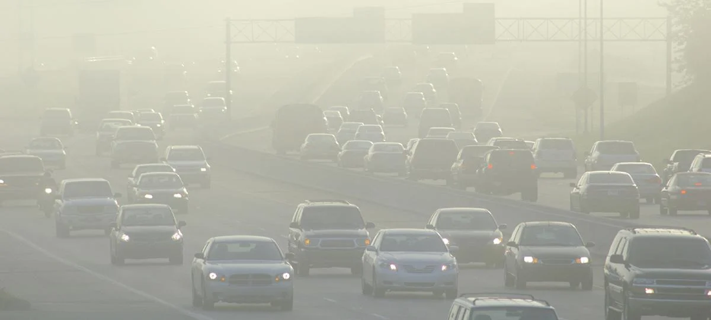
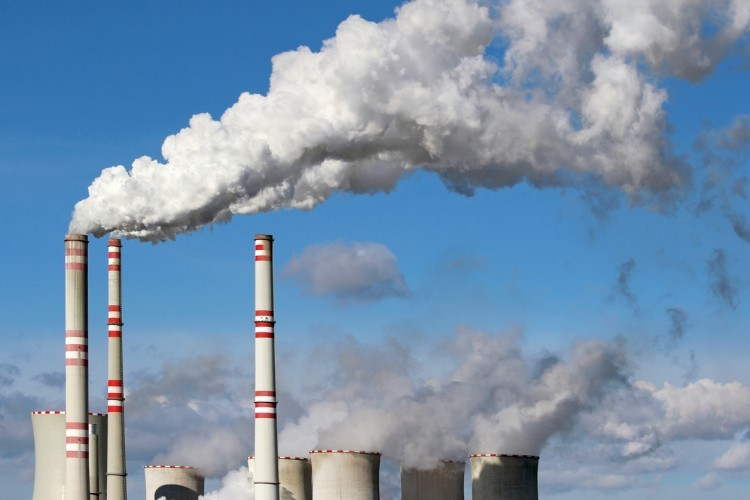
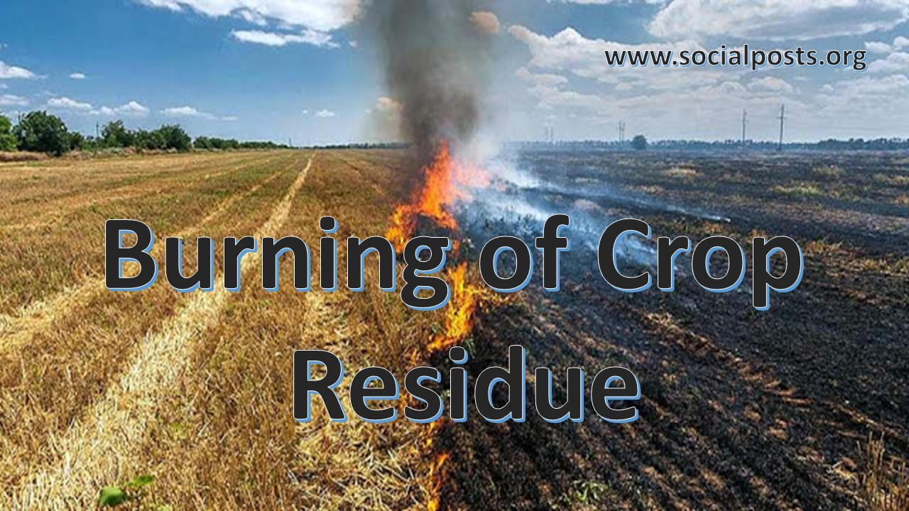
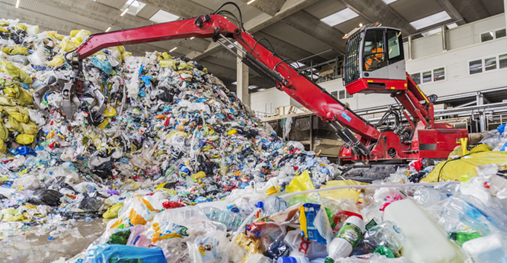

Air Pollution and its impact
INTRODUCTION
Air pollution is one of the most pressing environmental issues facing our planet today.
It refers to the presence of harmful substances in the air, such as gases, particles, and biological
molecules, that can affect the health of living organisms and the environment. The sources of air pollution
are numerous and can come from both natural and human activities.
Air pollution is a significant problem in many parts of the world, particularly in developing countries.
In some cities, air pollution levels are so high that they pose an immediate threat to human health,
causing respiratory problems and other illnesses. According to the World Health Organization (WHO), air
pollution is responsible for over 7 million premature deaths worldwide each year, making it the single
largest environmental health risk.
The primary sources of air pollution are transportation, industry, power generation, and
agriculture.
Vehicle exhaust is a significant contributor to air pollution in urban areas, releasing harmful gases
such as carbon monoxide, nitrogen oxides, and particulate matter into the air. Industrial activities
such as mining, manufacturing, and construction can also release significant amounts of air pollutants
into the environment. Power generation from fossil fuels, such as coal, oil, and natural gas, is another
major contributor to air pollution. The burning of these fuels releases pollutants such as sulfur dioxide,
nitrogen oxides, and particulate matter into the air. Finally, agriculture also plays a role in air
pollution,
as the use of fertilizers and pesticides can release harmful gases into the environment.
Air pollution can have significant health impacts, including respiratory and cardiovascular diseases,
cancer, and neurological effects. Exposure to high levels of air pollution can cause or worsen conditions
such as asthma, chronic obstructive pulmonary disease (COPD), and lung cancer. Air pollution can also harm
the cardiovascular system, leading to increased risk of heart attack and stroke. In addition, air pollution
has been linked to neurological effects, including cognitive decline and dementia.
Air pollution can also harm ecosystems by damaging crops and forests, acidifying soil and water, and
contributing to climate change. High levels of air pollution can damage crops by reducing photosynthesis,
stunting growth, and reducing yields. Forests can also be affected by air pollution, leading to the decline
of tree species and reduced biodiversity. Air pollution can also contribute to climate change by releasing
greenhouse gases such as carbon dioxide and methane into the atmosphere.
Addressing air pollution requires a range of solutions, including policy and regulation, technological
innovation, and public awareness campaigns. Governments can regulate emissions from vehicles, industries,
and power plants, as well as promote the use of cleaner fuels and renewable energy sources. Technological
innovation can also play a role in reducing air pollution, such as the development of cleaner engines and
more efficient energy production. Finally, public awareness campaigns can help educate people about the
impacts
of air pollution and encourage them to take action to reduce their own emissions.
In conclusion, air pollution is a significant environmental issue that has far-reaching impacts on
human health and the environment. The sources of air pollution are numerous and varied, and addressing
the problem requires a range of solutions. By working together to reduce air pollution, we can improve
the health of our planet and ensure a more sustainable future for all.
Causes of air pollution
Air pollution is caused by a variety of natural and human-made factors. Some of the main causes of air pollution include:
1.Transportation:
Air pollution caused by transportation refers to the release of harmful substances into the air
from vehicles such as cars, trucks, buses, and airplanes. The primary pollutants released by
transportation are nitrogen oxides (NOx), carbon monoxide (CO), particulate matter (PM), and
volatile organic compounds (VOCs). These pollutants are harmful to both human health and the
environment.
NOx is a major pollutant emitted by transportation, particularly diesel-powered vehicles. NOx contributes
to the formation of smog and can have serious health impacts, including respiratory problems and
cardiovascular disease. CO is another pollutant emitted by transportation, particularly in urban areas
with heavy traffic. CO can reduce the amount of oxygen in the blood, leading to headaches, dizziness,
and nausea.

2.Industrial activities:
Industrial activities are a significant source of air pollution, releasing a range of pollutants into the environment. Industries such as manufacturing, mining, and construction can release harmful substances into the air, including sulfur dioxide, nitrogen oxides, and particulate matter. These pollutants are often generated as a byproduct of the production process or the use of heavy machinery.
3.Agricultural activities:
Agriculture is a significant contributor to air pollution. The use of fertilizers and pesticides in agriculture can release harmful gases into the environment, such as ammonia and nitrogen oxides. Ammonia is produced when fertilizers containing nitrogen are applied to the soil, while nitrogen oxides are released during the cultivation of crops and the use of heavy machinery such as tractors.
Some plants for reduce Air pollution
1.Solar Power Plants:
Solar power plants generate electricity without emitting any harmful gases or particulate matter, making them a clean source of energy.A solar power plant is a facility that generates electricity from solar energy. Solar power plants use solar panels, which are made up of photovoltaic (PV) cells that convert sunlight into electricity. The electricity generated by solar power plants can be used to power homes, businesses, and other facilities.

2.Electric Vehicles Manufacturing Plants:
Electric vehicle (EV) manufacturing plants are becoming increasingly important in the effort to reduce air pollution. The production of electric vehicles emits fewer greenhouse gases compared to traditional internal combustion engine vehicles. Moreover, EVs have zero tailpipe emissions, which means that they do not emit harmful pollutants into the air during use.

3.Recycling Plants:
Recycling plants play a significant role in reducing air pollution by diverting waste from landfills, reducing the need for new products to be manufactured, and thus reducing emissions associated with the production of new goods. The process of recycling itself can also help reduce air pollution.
Prevention and control measures of Air pollution
Prevention and control measures of air pollution are essential to reduce the harmful effects of air pollution on human health and the environment. Here are some effective measures that can be taken to prevent and control air pollution:
1. Promote Clean Energy Sources: Renewable energy sources such as solar, wind, and hydroelectric power can help reduce air pollution by replacing fossil fuels, which emit harmful gases.
2. Improve Transportation: Encouraging the use of public transportation, carpooling, biking, and walking can reduce emissions from transportation.
3. Use of Cleaner Technologies: Using cleaner technologies and practices in industries, such as capturing and storing emissions and using low-emission fuels, can significantly reduce air pollution.
4. Promote Sustainable Agriculture: Reducing the use of chemical fertilizers and pesticides, promoting organic farming practices, and encouraging the use of biodegradable materials can help reduce air pollution from agricultural activities.
5. Implement Waste Management Practices: Proper waste management practices, such as recycling and composting, can reduce the amount of waste that ends up in landfills, which can emit harmful gases.
6. Improve Indoor Air Quality: Improving indoor air quality through proper ventilation and the use of air filters can help reduce the harmful effects of air pollution on human health.
7. Implement Environmental Regulations: Governments can implement regulations and standards for air pollution control, which can set emission limits for industries, vehicles, and other sources of air pollution.
Other meanings

Another way to think of prevention and control measures of air pollution is as a set of actions that aim to reduce the amount of pollutants released into the air and minimize their harmful effects on human health and the environment. These measures can include both technological solutions and behavioral changes, and can be implemented at the individual, community, and government level.
- Emission Reduction Technologies: Technologies such as catalytic converters, scrubbers, and filters
can be installed on vehicles and industrial facilities to reduce the amount of pollutants emitted
into the air.
- Renewable Energy Sources: The use of renewable energy sources such as solar and wind power can
reduce the amount of greenhouse gas emissions from fossil fuels.
- Urban Planning: Urban planning can include measures such as green spaces, pedestrian and
bike-friendly infrastructure, and public transportation, which can reduce reliance on cars and
decrease air pollution.
- Agricultural Best Practices: Sustainable agricultural practices, such as crop rotation and the use
of organic fertilizers, can reduce the amount of harmful chemicals and particulate matter released
into the air.
- Education and Awareness: Raising awareness about air pollution and its health effects can encourage
individuals and communities to take action to reduce their own emissions.
"Breathing clean air shouldn't be a luxury, it's a fundamental right for all living beings."...
Why cleaning/Reducing of Air pollution is important?
Protecting Human Health
Air pollution can cause a range of respiratory and cardiovascular diseases, as well as other health problems. By reducing air pollution, we can protect the health of individuals and communities.
Environmental Protection
Air pollution can harm plants, animals, and ecosystems. By reducing air pollution, we can protect the environment and the biodiversity of our planet.
Mitigating Climate Change
Air pollution contributes to climate change by releasing greenhouse gases into the atmosphere. By reducing air pollution, we can help mitigate the effects of climate change and reduce its impacts on human societies and ecosystems.

Photo by Kevin Dooley
What next?
If you found this article useful, might you consider telling your colleagues or mentioning it on your website?
You might also be interested in our other articles on How to reduce Air Pollution.
And you might like to take a look at our Air Pollution Sources – it's a big help for finding energy waste (step 2) and tracking progress at making savings (step 4):